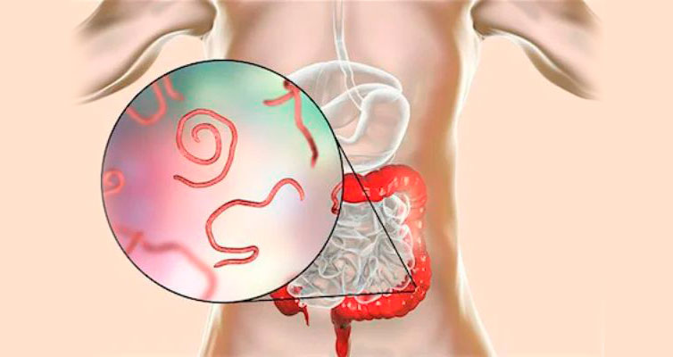
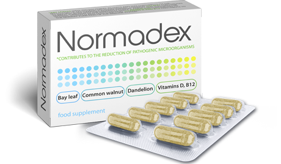

Milioane de oameni nu știu că sunt infectați cu paraziți. Nu este întotdeauna ușor să diagnosticați prezența „dăunătorilor” în organism, deoarece multe simptome sunt ușor de confundat cu semne de alte boli. Să scape de organisme dăunătoare este mai dificil decât pare - ei supraviețuiesc și se înmulțesc în mod activ. De exemplu, larvele de infestare cu viermi pot rămâne la om chiar și după curățarea corpului de adulți. Și simptomele (dacă se manifestă) sunt cel mai adesea atribuite altor boli. Imunolog-parazitolog Katie Canavan a povestit cum să identifice rapid și să vindece infecția cu paraziți.

- Bună ziua, doctore. Problema infecției cu paraziți este cu adevărat relevantă?
- Bună ziua. Dacă ne uităm la statistici, conform datelor din anul 2010, au existat nu mai mult de 3 miliarde de oameni infectați în lume. În zece ani, numărul bolnavilor a crescut la 5 miliarde.
- Îngrozitor, atât de mulți oameni! Este chiar atât de dificil să îndepărteze paraziți?
Da, mulți oameni nu știu că sunt infectați. E mai greu să se vindecă decât pare. Unii oameni cred că vor bea o pastilă și toți paraziții vor muri. Dar ei nu iau în considerare faptul că de o dată este imposibil să îndepărteze toate indivizii adulți și ouăle lor.
- Cum să nu simți că viermii se află în interiorul tău?
- Nu sunt întotdeauna viermi. Există, de asemenea, astfel de microorganisme care nu sunt detectate chiar și în timpul examinărilor ample.
- Adică, o persoană poate fi examinată pentru paraziți și crede că este sănătoasă, dar este de fapt, infectată?
- Din păcate, așa și este. În natură, în fiecare zi apar noi specii. Parazitul se adaptează, își schimbă ADN-ul, forma, structura și rămâne invizibil pentru o lungă perioadă de timp. Au existat cazuri în care oamenii au spus că cineva se târăște înăuntru. Li s-a făcut o examinare completă, dar nu s-a găsit nimic. Unii au fost transferați într-o secție de psihiatrie. După un timp când a fost deja târziu să trateze paraziți, s-a dovedit că ei au fost infectați cu o specie necunoscută anterior.

- Ce groază! Toți paraziții afectează negativ organismul?
- Toți, fără excepție, paraziții se hrănesc cu vitamine și oligoelemente ale gazdei, în același timp îi deteriorează țesuturile. De exemplu, ascarida din intestin va apăsa, va răni peretele intestinal. Echinococcus, fiind undeva în ficat, în plămâni sau în rinichi, provoacă formarea unui chist și chiar a tumorilor maligne.
— Cum se poate infecta cu ei?
- În multe moduri diferite. Te infectezi cu filarioză după o mușcătură de insecte. Ouăle de viermi rotunzi, ascaride, intră în organism cu alimente, apă sau animale de companie. Trichinella intră în interiorul tău atunci când mănânci alimente slab procesate.
- Am auzit că infecțiile parazitare cauzează adesea alergii care nu pot fi vindecate.
- În caz dereacții alergice pacientul începe să meargă în cerc: la dermatolog, la terapeut, la alergolog. Dar s-ar putea să nu se știe niciodată că cauza alergiei este activitatea vitală a paraziților.
- Este adevărat că organismele dăunătoare dăunează sistemului imunitar?
- Desigur, precum și microflora și sistemul nervos. De aici apar răceli frecvente și dezvoltarea bolilor cronice. Paraziții produc antienzime prin inhibarea sistemului imunitar. Mai devreme sau mai târziu, aceasta duce la boli grave.
- Ce fel de boli?
- Totul depinde de organ și de amploarea leziunii. Cel mai periculos lucru pe care îl pot provoca paraziți din cauza deteriorării organului sau a eșecului sistemului imunitar este neoplasme. Atât benigne, cât și maligne.
- Cu cât aflu mai mult despre paraziți, cu atât devine mai înspăimântător. Este adevărat că paraziții pot provoca o stare depresivă?
- Paraziții pot chiar să conducă o persoană. Produsele activității lor vitale otrăvesc sistemul nervos. Orice boală psihosomatică poate fi asociată cu invazia parazitară. Chiar și cea mai simplă giardia produce toxine. Microdozele toxinelor afectează organismul ca substanțe psihotrope. Tulburări de somn, psihoze, obsesii, depresie și alte probleme psihologice.
- Ce să iau dacă am aflat că am fost infectat?
- Problema multor medicamente este că paralizează numai organismele dăunătoare, dar nu le îndepărtează. Sau îndepărtează parțial. Pentru recuperare, este necesară o curățare completă a corpului.
- Există o modalitate de a îndepărta complet paraziții?
- A apărut recent. Medicamentul natural antiparazitar va ajuta la curățarea și restabilirea corpului. În acest moment, acesta este singurul remediu care nu numai că se luptă cu toate speciile cunoscute și curăță organismul de produsele activităţii vitale, ci și creează o barieră protectoare care nu permite nici măcar speciei necunoscute de paraziți să intre în organism.

— Cum este posibil acest lucru? Spuneți mai multe!
- Intrând în corpul uman, blochează sistemul nervos al paraziților, din cauza căruia nu se pot mișca, reproduce și hrăni. După aceea, organismele paralizate se desprind de pereții organelor interne și sunt excretate în mod natural. Medicamentul elimină nu numai paraziții înșiși, ci și larvele și produsele activităţii lor vitale. Etapa finală este repararea țesuturilor deteriorate și imunomodularea. Prin urmare, este atât de important să beți un curs complet de medicament.
- Există contraindicații și poate fi luat acest remediu pentru prevenire?
- În fiecare zi suntem expuși la infecție. 95% din populație este deja infectată și jumătate dintre ei nu știu despre asta. Prin urmare, este atât de important să te protejezi pe tine și pe cei dragi. Și, spre deosebire de produsele farmaceutice, poate fi luat și pentru prevenire.
— Unde poate fi cumpărat acest medicament?
— poate fi comandat direct de la producător cu livrare la domiciliu. Medicamentul poate fi plătit atât prin plata în avans, cât și la primirea către curier - e foarte convenabil.
- Vă mulțumesc foarte mult pentru un astfel de interviu detaliat.
- Vă mulțumesc că ați decis să evidențiați o astfel de problemă importantă a modernității. Să aveți o zi bună și să fiți sănătoși.